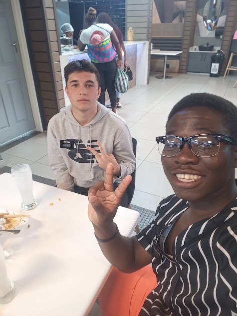

Farai Dandara | WDD 130
Hello, my name is Farai Dandara. I come from Harare. I really enjoy playing basketball, reading and spending time with my family. I aspire to be a full stack developer in the future. I also really enjoy and eversince I was a kid I have always wanted to work with computers and this course is the perfect opportunty to do so. I am a member of The Church Of Jesus Christ Of Latter Day Saints and I served a mission in the Zimbabwe Bulawayo and Mozambique Maputo missions. I can also speak four languages three of them fluently namely Portuguese, Shona and English and I am in the proccess of learning Japanese and I am able to speak quite a bit of Ndebele.